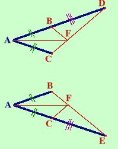

Problema
Sui lati dell'angolo A si prendano due segmenti AB ed AC congruenti e, consecutivamente, altri due segmenti congruenti BD e CE. Si unisca B con E e C con D. Sia F il punto di intersezione: dimostrare che la retta AF e' la bisettrice dell'angolo A
Facciamo come negli esercizi precedenti (naturalmente lo faremo solo per i primi esercizi, poi, una volta diventati esperti, abbrevieremo):
Mettendo assieme quanto visto nei punti precedenti abbiamo
Ipotesi

tesi

Considero i triangoli ADC ed ABE (te li ho estratti dalla figura completa), essi hanno:
-
AC=AB per ipotesi
- AD=AE perche' somma di segmenti congruenti
- L'angolo A in comune
Quindi i due triangoli sono congruenti per il primo criterio di congruenza ed in particolare saranno congruenti gli angoli ADC=AEB e ABE=ACD
(Ripeto la figura per farti seguire meglio il ragionamento)
Considero ora i triangoli BFD e CFE, essi hanno:
-
BD=CE per ipotesi
- Gli angoli BDF=CEF perche' appena dimostrato Corrispondono agli angoli ADC ed AEB
- Gli angoli FBD=FCE perche' supplementari degli angoli congruenti ABE=ACD come abbiamo appena dimostrato Supplementari vuol dire che con gli altri angoli formano un angolo piatto
I due triangoli sono congruenti per il secondo criterio ed in particolare hanno congruenti i lati BF=CF
Considero infine i triangoli ABF e ACF, essi hanno:
-
AB=AC per ipotesi
- Gli angoli AF congruente perche' in comune
- BF=CF perche' appena dimostrato
Quindi i due triangoli sono congruenti per il terzo criterio ed in particolare avranno congruenti gli angoli BAF=CAF cioe' AF
e' la bisettrice come volevamo dimostrare
|